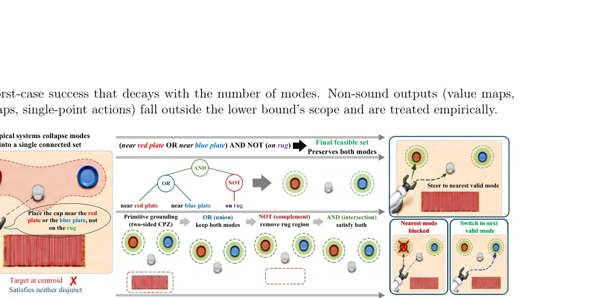
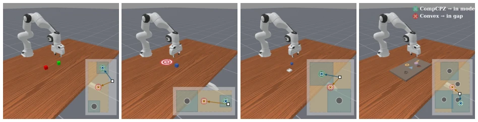
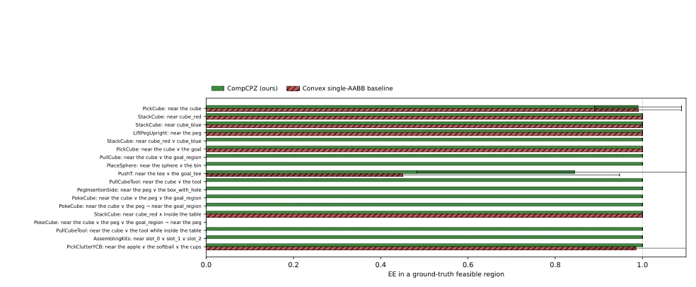
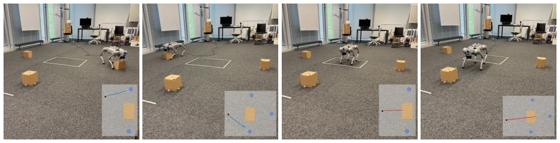
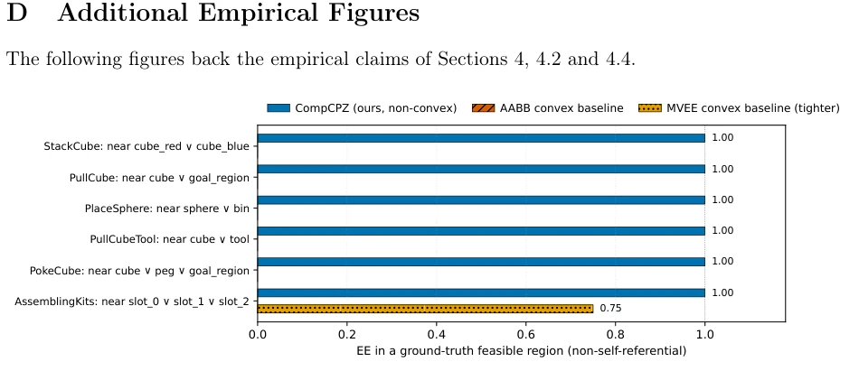
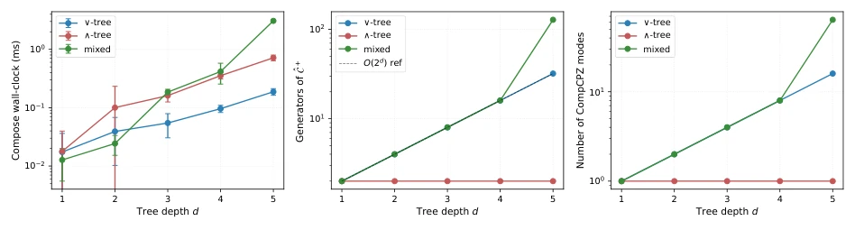

CompCPZ: Preserving Multi-Modal Intent in Language-Guided Robot Manipulation
Zhen Zhang, Ahmad Hafez, Peng Xie, Yanliang Huang, Wenyuan Wu, Amr Alanwar abspdf
论文点评Review
这篇论文给语言导航机器人泼了盆冷水：你算得再准，语义错了也是白搭。CompCPZ 没搞新学习算法，而是搞了个代数层，把“或”“非”逻辑硬塞进集合表示里。以前模型喜欢把“放红盘或蓝盘”合成一个质心，结果掉中间。作者证明了这是拓扑缺陷，不是调参问题，任何少于 k 个连通分量的声学编码必丢失至少一半模式间距。CompCPZ 用多项式 zonotope 拼凑可行集，保真度拉满，仿真和真机都赢了。但局限也明显：非轴对齐时稳定性变差，真机只测了平面四足，没碰复杂接触操作。算是给 VLA 加个“防痴呆”补丁，但补丁本身够硬核，值得学习。
This paper casts a cold shadow on language navigation robots: no matter how precise your calculations are, if semantics are wrong, it is futile. CompCPZ does not devise new learning algorithms, but introduces an algebraic layer that embeds 'OR' and 'NOT' logic directly into set representations. Previously, models tended to synthesize 'place on red plate or blue plate' into a single centroid, resulting in failure in the middle. The authors proved this is a topological defect, not a hyperparameter tuning issue; any acoustic encoding with fewer than k connected components must lose at least half the mode spacing. CompCPZ constructs feasible sets using polynomial zonotopes, achieving maximum fidelity, and wins in both simulation and real-world deployment. However, limitations are evident: stability degrades when non-axis-aligned, and real-world testing was limited to planar quadrupeds without complex contact operations. It serves as an 'anti-dementia' patch for VLA, but the patch itself is sufficiently robust and worth studying.
The core pain point is 'silent semantic failure'. Instructions such as 'place on red plate or blue plate' often cause existing systems to output intermediate points, achieving geometric success but violating semantics. Existing work falls into three categories: (i) convex set encapsulation (e.g., AABB) [12] which merges modes; (ii) multi-peak graphs/heatmaps [9, 27] which are non-acoustic; (iii) single action planning [10, 28] which cannot cover multimodalities. The authors prove that any acoustic encoding with fewer than k connected components must lose at least half the mode spacing, and single action planning success rates decay with the number of modes in the worst case. This is not merely a performance issue but a structural lower bound. Existing VLA [10] and diffusion policies [5] are all constrained by this, necessitating a representation layer capable of preserving topological structure. CompCPZ fills this theoretical gap.

Figure 1: CompCPZ compiles a natural-language instruction into a sound k-component feasibility set via bottom-up Boolean composition of two-sided per-primitive enclosures, with run-time mode switching for handling occlusion of the nearest mode.
The overall architecture is 'perception + algebraic compiler'. 1. Parsing: VLM (GPT-4o) converts natural language into a syntax tree (AND/OR/NOT). 2. Extraction: YOLOv8n detects objects, generating bidirectional CPZ envelopes (upper/lower bounds) for each primitive (e.g., near, avoid), using conformal prediction to guarantee coverage. 3. Combination: Bottom-up recursive combination of CPZ, where AND corresponds to intersection, OR to union, and NOT to complement. CPZ supports polynomial constraints (e.g., elliptical obstacle avoidance) and exact boolean operations. 4. Planning: Switch target modes at runtime based on mode blocking conditions. The innovation lies in mapping language logic to set algebra rather than directly regressing actions. CPZ is more flexible than traditional zonotopes, supporting non-convex sets and polynomial constraints, with fast computation (sub-millisecond level). This layer is independent of learning components and can replace perception modules.

Figure 3: Sound convex enclosures structurally fail on disjunctive instructions (Theorem 12). Four ManiSkill3 task families, each pairing a SAPIEN render with a top-down inset. The CompCPZ target (green halo) lands inside a true mode; the convex AABB target (red halo) lands in the inter-mode gap.
Tested on ManiSkill3 simulation and Unitree Go2 real robot. Baselines include convex sets (AABB/MVEE), multi-peak decoders (PhysVLM, etc.), and OpenVLA. Metrics are In-GT-mode (whether within the true feasible region) and geometric success rate. CompCPZ won 1900/1918 times across 18 task families, with an extremely low p-value. Real-world experiments achieved 36/36 success, while the convex set baseline completely failed on negative instructions (e.g., 'not on carpet'). Ablation studies show perception layer fine-tuning (200 frames) is crucial for accuracy, but the algebraic layer itself is robust to perception noise. This proves preserving topological structure is more critical than simple action regression. Zero-shot OpenVLA achieved only 30.8% success rate, highlighting structural advantages.

Figure 4: Closed-loop Franka EE servo on 18 ManiSkill3 task families (200 seeds each). Both methods reach the target at ≥0.99 geometric success; only CompCPZ lands the EE inside an analytic GT mode. Convex silently fails on 10/18 multi-modal families (red “silent failure” annotations). Pooled paired sign test: 1,900/1,918 wins, p ≪10−30 (Section E).

Figure 5: Real-robot Go2 trials (36 trials total). Each panel: end-state photo with top-down MoCap trajectory inset (CompCPZ blue, AABB red). (a-b) CompCPZ reaches a GT mode. (c) AABB lands the dog on the forbidden rug (negation violation). (d) AABB stops in the inter-mode gap. Full per-trial table: Table 3.

Figure 6: Per-task in-GT-mode rate of CompCPZ vs. the AABB and the tighter MVEE convex baselines on the 6-task multi-modal subset (×20 seeds each). MVEE outperforms AABB only on AssemblingKits-v1 (0.75 vs. 0.00) but still trails CompCPZ; on the other five task families both convex baselines collapse to 0.00, consistent with the geometric prediction of Theorem 12.
其他图片Other Figures

Figure 7: Composition cost as a function of parse-tree depth, matching the O(2d) prediction of Theorem 16. Left: compose wall-clock (sub-millisecond at depth ≤5; sub-second at depth ≤7). Middle: number of generators of ˆC+. Right: number of CompCPZ modes returned by the composition. All three quantities scale as predicted under disjunction; conjunction stays approximately linear.